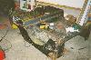
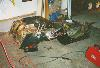

| [an error occurred while processing this directive] | Short Cuts | |
|
|
|
|
by: Terry L. Howe
|  |
| Replacing the floors |
The body work was by far the most complicated and time consuming part of this project to date. The tub was damaged beyond repair by most peoples standards, but I decided to fix it mostly because it was original. I wanted to maintain a original look to the vehicle, but I did not duplicate factory techniques as one would in a restoration. The work was time consuming enough as it was.
Tub
The body work started by completely replacing all the floor panels. The previous owner had already done this, but he cut out the old floor panels out with a torch and did a sloppy job of brazing in pieces of galvanized steel. I used some 16 gauge sheet metal on the floors which is thicker than original, but easier to weld. Since I didn't have a brake, I used some 1"x1" angle iron to join the sheet metal in some places.
I used some 1"x3" square tubing to make body mounts on the bottom of the tub. It was easy to drill this material out from the top with a hole saw and weld in a captured nut. After the nut was welded in, I welded the square tubing to the bottom of the new floor.
After the floors were replaced and the body mounts welded on, I had the tub sand blasted to remove all the old paint and Bondo. The sand blasting exposed a lot of problems, but it sure made welding easy. A few patches were welded on the sides and on the rear fender wells. The passenger side needed a lot of hammering since it had obviously been hit in some accident.
There were a couple modifications I did to the tub since I was replacing a lot of metal anyway. One modification was to eliminate the tool box and add a filler hole for an extra gas tank under the passenger seat. The gas tank under the drivers seat only holds around 11 gallons of fuel, so with two tanks, I should have plenty of fuel for long drives.
Another modification I did was move the front of the rear fender back about 1". This isn't much, but it doesn't take away from tire clearance and allows the seats to be moved back an 1". Flat fenders have very little leg room as it is and every little bit helps.
|  |
| Replacing the floors |
Hood
Sand blasting of hood made it look like swiss cheese. The previous owner had cut out a hood scoop with a torch and I just wasn't ambitious enough to fix it. I puchased a reproduction hood and had a friend, who is a professional welder, weld in the stamped "Willys" emblems from the original hood. It looked great and saved me hours of metal work.
Fenders
Like everything else, front fenders were in rough shape. They had been cut out to allow outside the frame headers for the Buick engine. The battery box and inner fender was basically messed up beyond repair. I decided to go with completely open fenders to allow easy access to the engine, so I took some 1" square tubing and reinforced they fenders. With some small gussets, the 1" tubing provided plenty of stiffness to the fender and they looked great.
Windshield
After the windshield was sand blasted, it was clear that all of the horizontal tubes would need to be replaced in order to save it. Instead of going to all the trouble, I bought a windshield from a '47 CJ-2A that was in fairly good shape. I had it sand blasted and did some minor repairs to it.
I still didn't have a inner windshield frame that was in good shape, so I decided to sacrifice the inner windshield and weld in a fixed one. I had heard it was common for the inner windshield to leak and I figured I'd find water pooring in on my feet a bit annoying.
Grill
Doing all the body work, I discovered that the tub, tailgate, windshield, hood and one fender were original to the CJ-2A and one fender and the grill were from another Jeep. The grill had be cut up to accept some different marker lights, but it looked like a CJ-3A grill. I wanted to use the original bullet style lights that were used on the early CJ-2As. I patched up the holes in the grill and cut a hole the correct dimensions for a CJ-2A. I fabbed a mount for the bullet style parking light.
Conclusion
After all the metal work, it was time to skim on a coat of Bondo to give the Jeep a good consistent finish for painting. The Bondo was thicker than I'd like in areas, but many parts will be later protected with diamond plate.
|
| Related Information: |
{kind=link}
{kind=link}